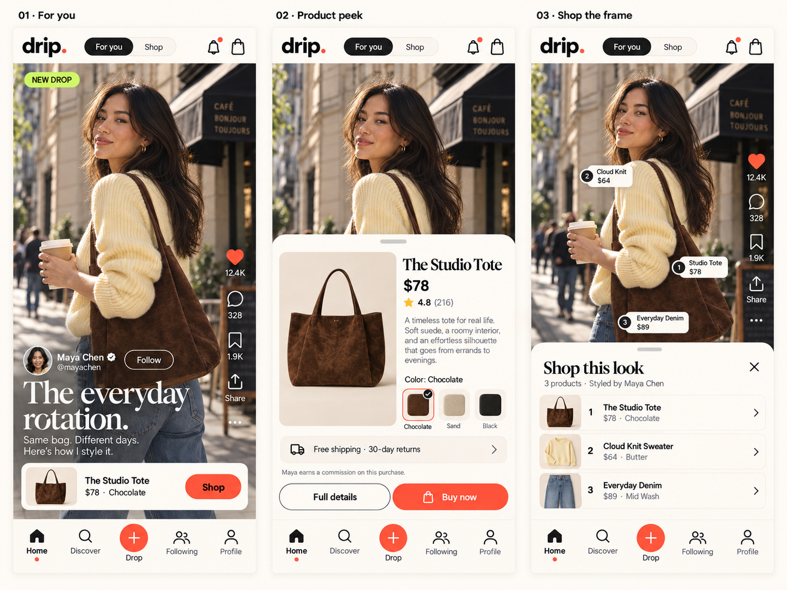
PDF page 8 · The content-to-commerce journey
The complete product experience · September 2026
39 app frames, 14 design boards and three visual directions. A complete reference for the moments between watching, discovering, collecting and buying.

PDF page 8 · The content-to-commerce journey
PDF page 9 · The content-to-commerce journey
PDF page 10 · The content-to-commerce journey
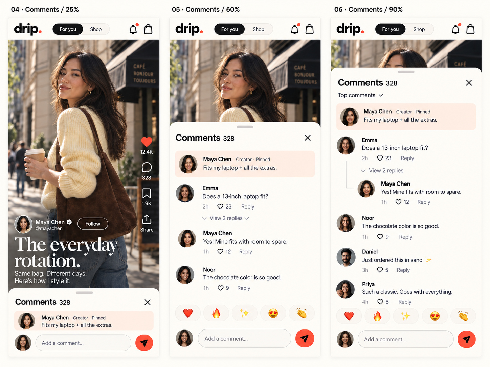
PDF page 12 · Comments that stay with the video
PDF page 13 · Comments that stay with the video
PDF page 14 · Comments that stay with the video
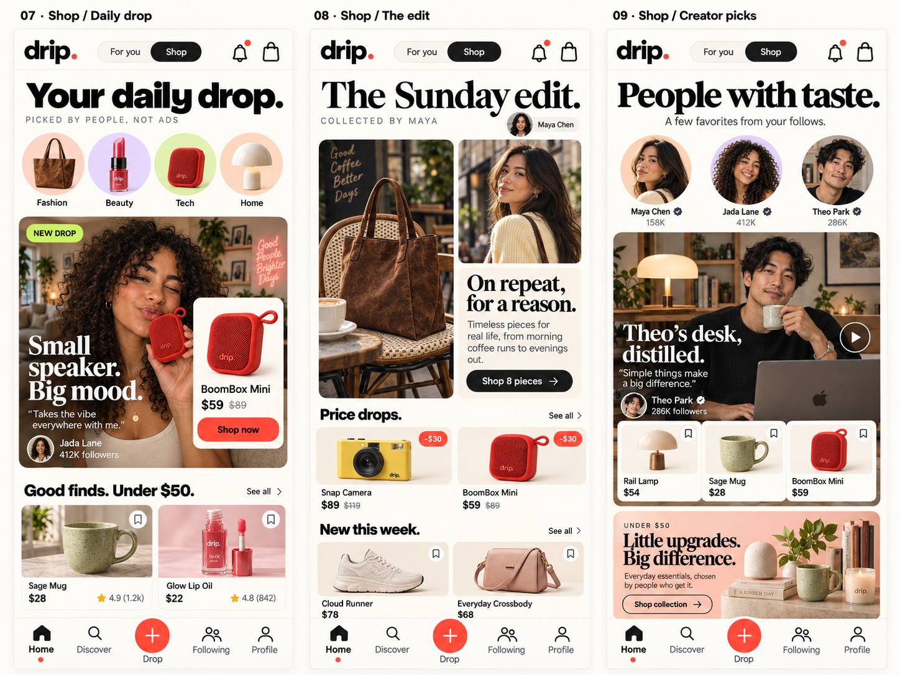
PDF page 16 · Three shopping compositions
PDF page 17 · Three shopping compositions
PDF page 18 · Three shopping compositions
PDF page 20 · Discovery and intent
PDF page 21 · Discovery and intent
PDF page 22 · Discovery and intent
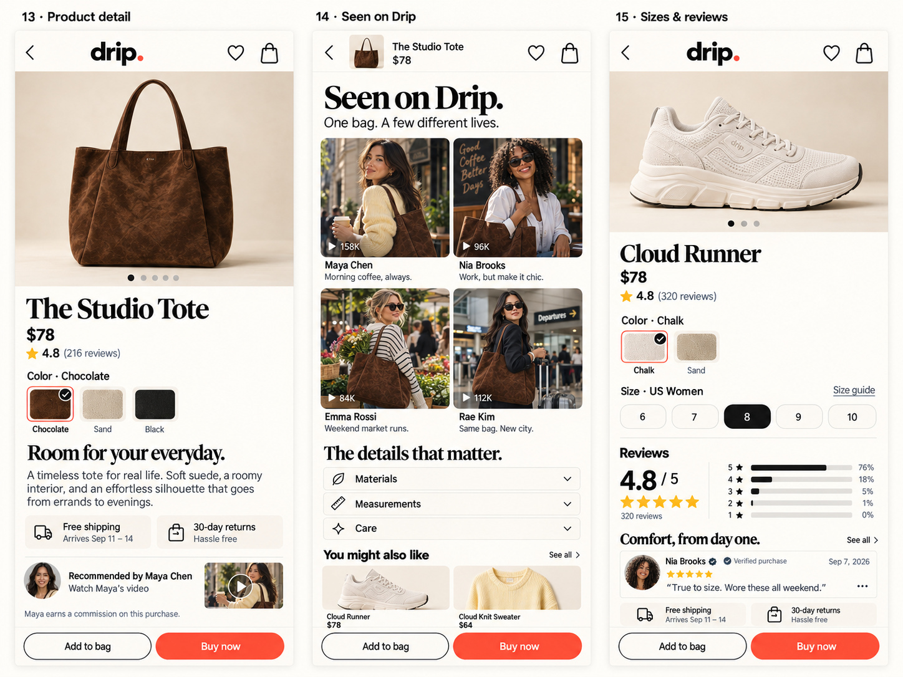
PDF page 24 · The buying decision
PDF page 25 · The buying decision
PDF page 26 · The buying decision
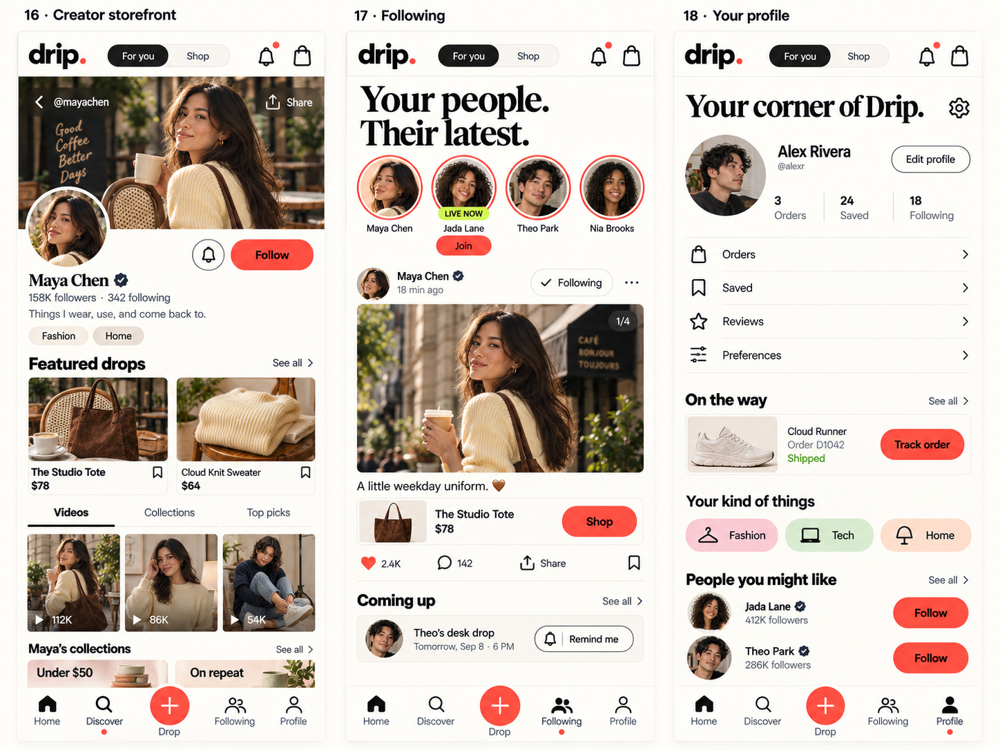
PDF page 28 · People and your corner
PDF page 29 · People and your corner
PDF page 30 · People and your corner
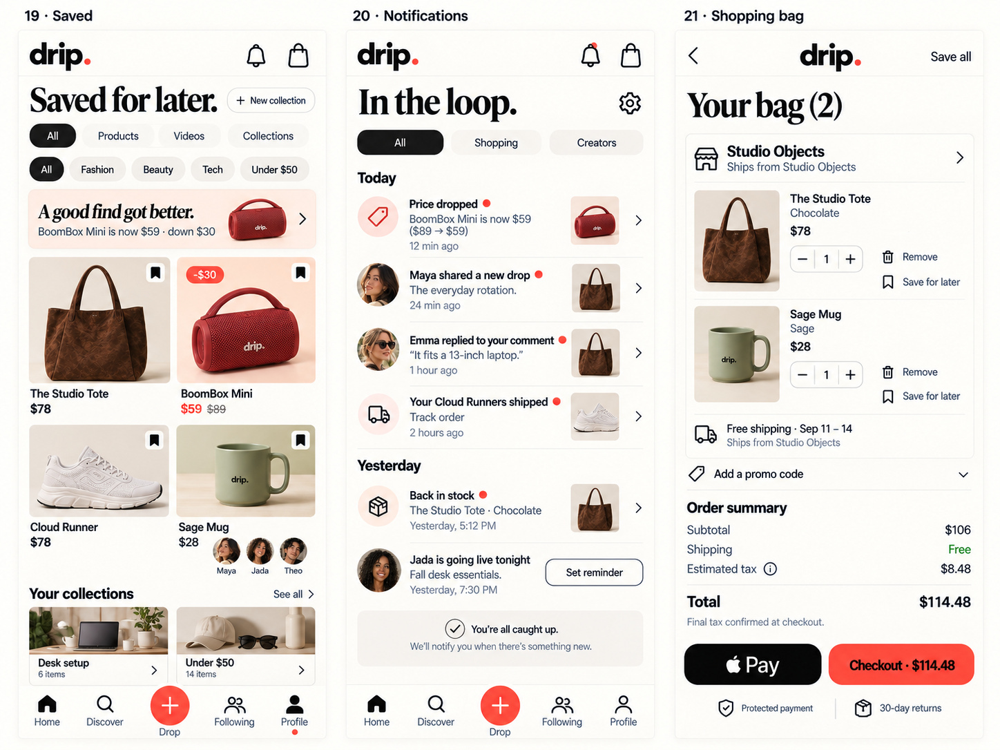
PDF page 32 · The shopping essentials
PDF page 33 · The shopping essentials
PDF page 34 · The shopping essentials
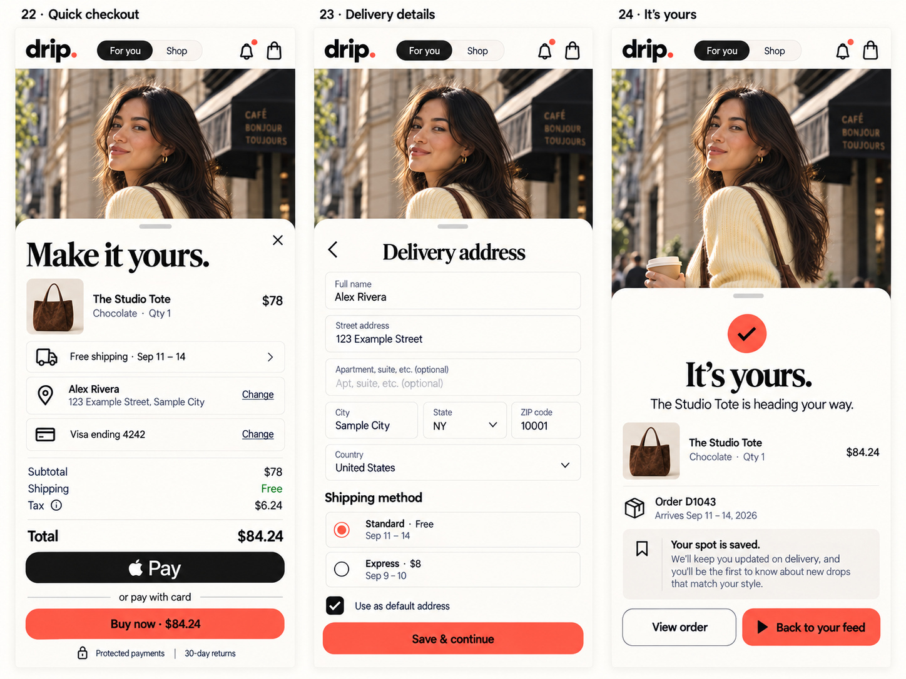
PDF page 36 · A purchase without losing your place
PDF page 37 · A purchase without losing your place
PDF page 38 · A purchase without losing your place
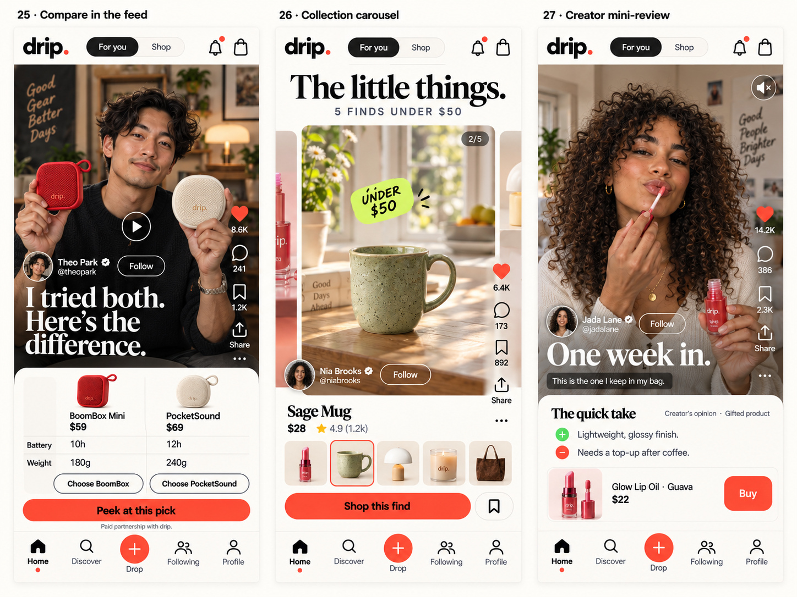
PDF page 40 · Different stories, one feed
PDF page 41 · Different stories, one feed
PDF page 42 · Different stories, one feed
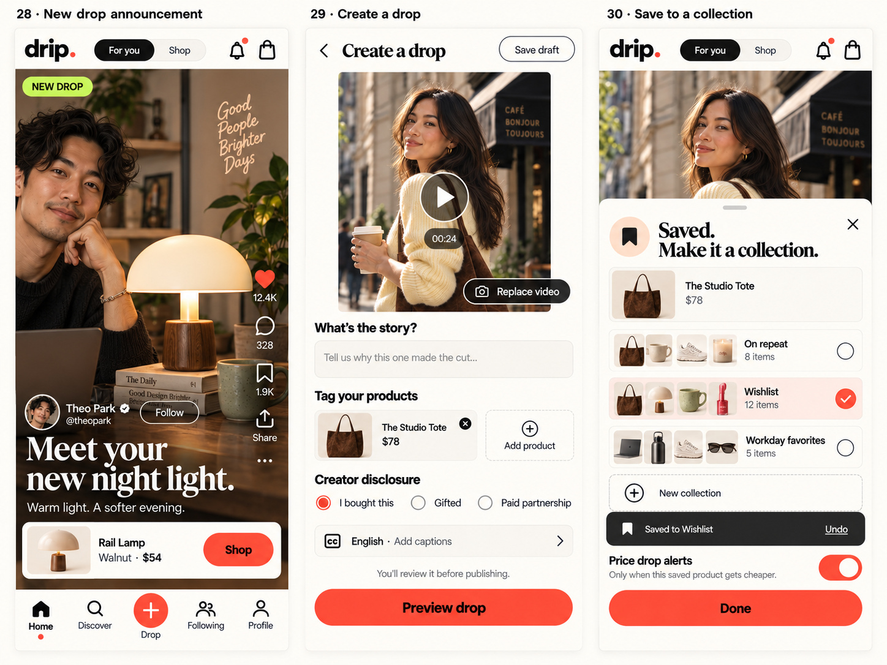
PDF page 44 · Creating and collecting
PDF page 45 · Creating and collecting
PDF page 46 · Creating and collecting
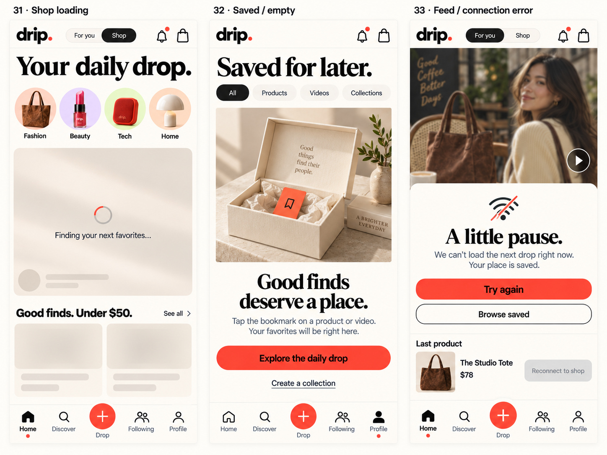
PDF page 48 · Waiting, starting, reconnecting
PDF page 49 · Waiting, starting, reconnecting
PDF page 50 · Waiting, starting, reconnecting
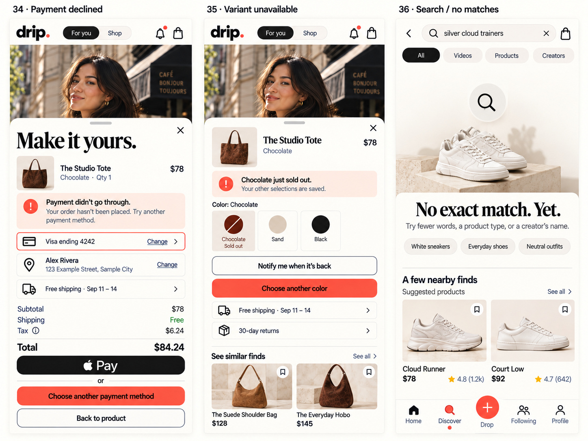
PDF page 52 · Useful recovery paths
PDF page 53 · Useful recovery paths
PDF page 54 · Useful recovery paths
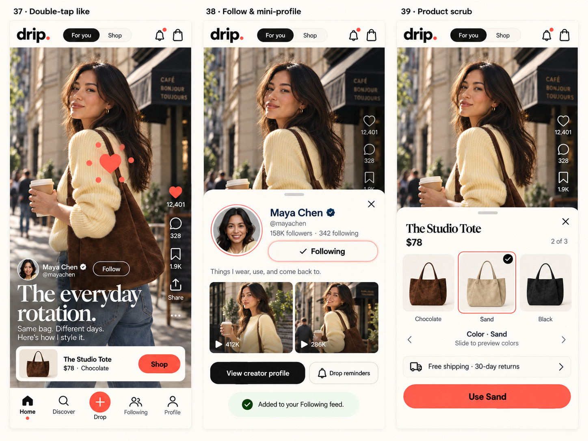
PDF page 56 · Small interactions, Drip character
PDF page 57 · Small interactions, Drip character
PDF page 58 · Small interactions, Drip character
For you Product peek Shop the frame
Comments / 25% Comments / 60% Comments / 90%
Shop / Daily drop Shop / The edit Shop / Creator picks
Discover Fashion Search results
Product detail Seen on Drip Sizes and reviews
Creator storefront Following Your profile
Saved Notifications Shopping bag
Quick checkout Delivery details It's yours
Compare in the feed Collection carousel Creator mini-review
New drop announcement Create a drop Save to a collection
Shop loading Saved / empty Feed / connection error
Payment declined Variant unavailable Search / no matches
Double-tap like Follow and mini-profile Product scrub
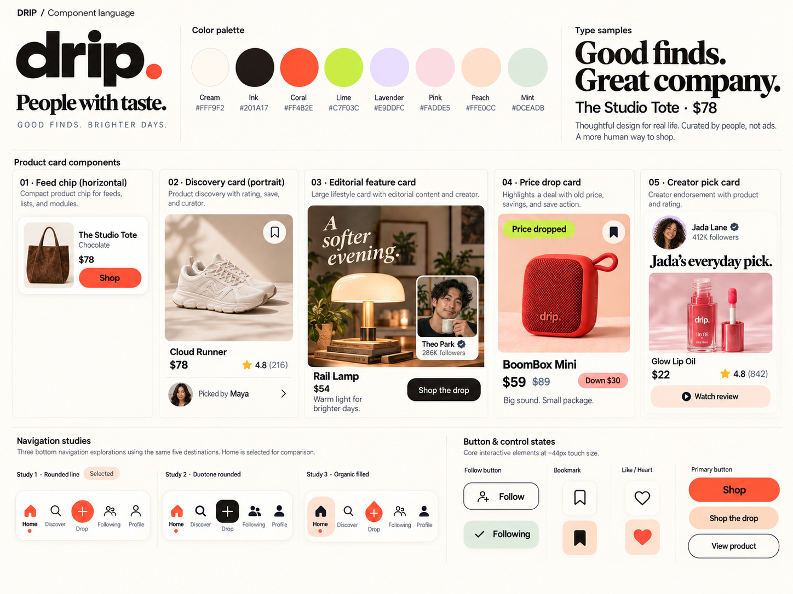
No matching frames. Try another screen or clear your search.
The final direction combines editorial photography, tactile creator commerce and contextual product sheets. These are exploration references, not extra app themes.
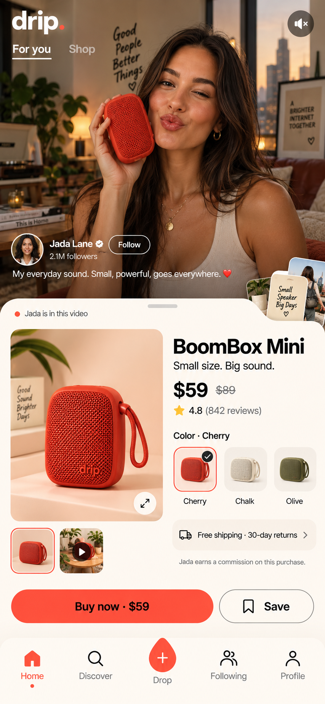
#FFF9F2#201A17#6E6259#FF4B2E#C2410C#C7F03C#E9DDFC#FADDE5#FFE0CC#DCEADB#B52E18#245534Use ink text on coral controls. See the specification for measured contrast, typography, spacing, navigation, motion, responsive behavior and exact corrections to illustrative artwork.